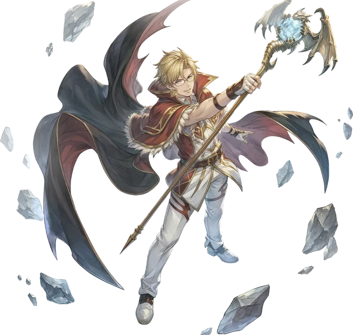

Third tier
High Wizard
High Wizard is the primary advancement option for Wizards. It continues to excel at what the Wizard does best - dish out huge amounts of elemental damage over a wide area.
The High Wizard turns back to its roots, focusing on the four natural elements with its magic, leaving the more esoteric magics to the Warlock. Their skills divide into the four branches you would expect: fire, water, wind, and earth magic.
Each branch comes with two skills. A major skill, dealing a large amount of damage over a wide area, and a minor skill, dealing damage over a much smaller area. The major skills each grant the user an Elemental Affinity, which boosts the effects of all magic used of the same element, even enhancing their Mage and Wizard skills. The minor skills all gain powerful additional effects while their appropriate Affinity is active, and also serve to reset the duration of that Affinity.
Affinities serve two powerful functions. The first is its enhancement to all elemental magic that matches it: while an Affinity is active, all magic of that element gains an enormous bonus to its Magic Defense Pierce. In addition, the Affinities alter the behavior of the remaining two High Wizard skills that sit outside the elemental branches.
Mystical Amplification increases the user's Magic Attack for a single cast, at the cost of also increasing that skill's Fixed Cast Time. If an Affinity is active, it is consumed to grant an additional bonus that lasts much longer depending on which Affinity was consumed.
The final High Wizard Skill is Elemental Annihilation, a massive nuke that deals incredible damage of all elements across four waves to the target and all enemies immediately around them. Usually this skill deals damage in the order of Fire, Water, Wind, and then Earth, but if any Affinity is active, it instead deals four waves of that particular element instead.

Skill list
Skills
Skill names and effects are kept in English because that is how they appear in game.
- Affinities
Affinities come in the four natural elements, Fire, Water, Wind, or Earth. While an Affinity is active, all magic that matches its element gains additional Magic Defense Pierce. Only one Affinity can be active at a time.
- Crimson Arrow
The user fires a bolt of concentrated Fire Magic, striking all targets in a straight line. Any target struck that is Burning takes additional damage, otherwise it attempts to inflict the Burning Status. If Fire Affinity is active, its duration is reset and the damage is treated as Burning Damage.
- Volcanic Burst
The user causes a burst of blazing magical energy to erupt beneath their target's feet, dealing Fire damage to them and all enemies around them. This skill deals additional damage to Burning enemies and applies the Fire Affinity status on the user.
- Frozen Grip
The user summons spikes of ice at the target's location, dealing Water property damage to them and all enemies nearby. If this skill strikes a Chilled target, it deals additional damage. Otherwise, it attempts to inflict the Chilled status. If Water Affinity is active, its duration is reset and this skill has a chance to Freeze.
- Frost Nova
The user unleashes a blast of freezing magic around themselves, dealing Water Property damage to all enemies in an area around them. This skill deals additional damage to Chilled enemies, and applies the Water Affinity status on the user.
- Chain Lightning
Invokes a burst of lightning on the target, dealing Wind Property damage before repeating against another nearby target. The number of bounces is affected by the level of the skill. If there are no other targets in the area, the same target can be struck multiple times. This skill deals additional damage to Sleeping and Dazed enemies. If Wind Affinity is active, its duration is reset and this skill gains additional bounces.
- Static Storm
Creates an electrically charged zone that is struck repeatedly by lightning bolts, dealing rapid Wind Property damage over time to all enemies within it. This skill deals additional damage to Sleeping and Dazed targets, and applies the Wind Affinity Status on the user.
- Stone Crush
Summons an enormous stone sphere and drops it on the target's location, dealing Earth Property damage to them and all enemies around them. Deals additional damage to Bleeding enemies, otherwise has a chance to inflict Internal Bleeding. If Earth Affinity is active, its duration is reset and the damage is treated as Bleeding damage.
- Seismic Tremor
Infuses magic into the ground at the target location, causing it to tremor and deal Earth Property damage to all enemies above it. This skill deals additional damage to Bleeding enemies, and applies the Earth Affinity status on the user.
- Mystic Amplification
The user infuses their staff with incredible magical energies, amplifying the effects of their next spell. For a single skill cast, the user's Magic Attack is massively increased, but so is its Fixed Cast Time. If the user is under any Elemental Affinity when this skill is cast, it is consumed to grant and additional buff for thirty seconds:
- Fire: Burning Damage increased by 30%
- Water
All skills have a chance to inflict Freeze
- Wind
All skills have a chance to inflict Sleep
- Earth
Bleeding Damage increased by 30% This skill does not stack with Rapid Incantation.
- Elemental Annihilation
The user channels a massive blast of elemental energy, obliterating a single target and all enemies nearby. Attacks in four waves, in the order of Fire, Water, Wind, Earth. If the user has an Elemental Affinity active, all four waves will match that element instead.
Come find out what changed
Make an account now, grab the client, and be there when the servers go up.